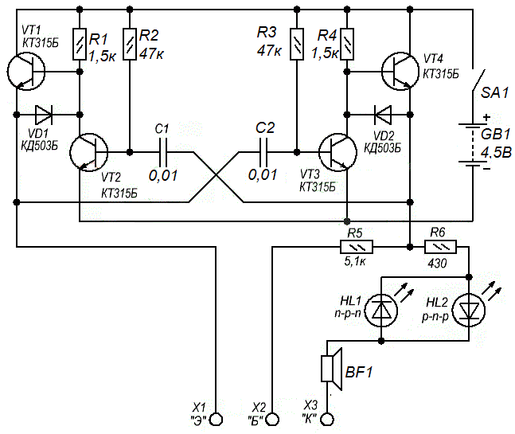
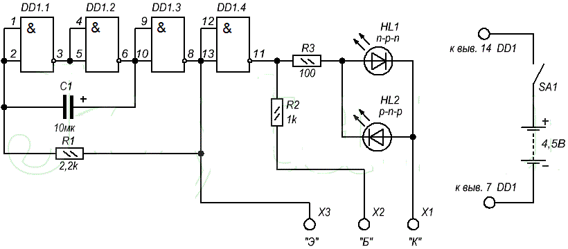
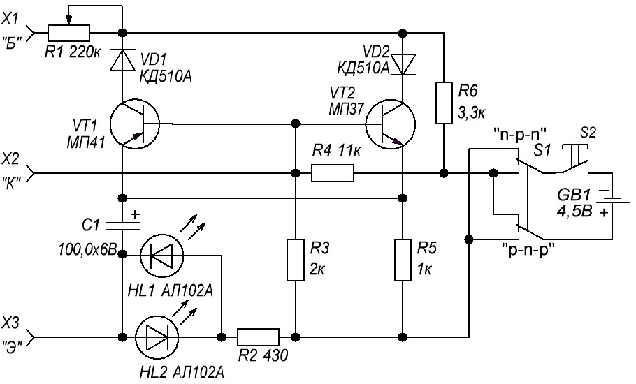
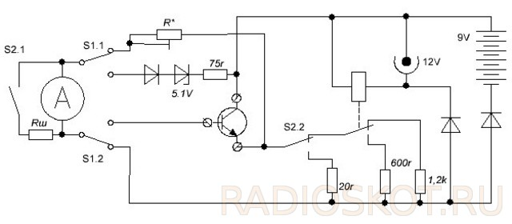
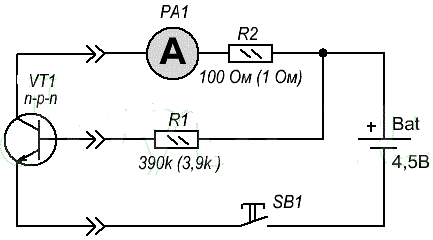

Приборы для проверки транзисторов
Пробник для проверки транзисторов (вариант 1)
Данная схема (рис. 1) построена на базе симметричного мультивибратора, но отрицательные связи сквозь конденсаторы С1 и С2 снимаются с эмиттеров транзисторов VT1 и VT4. В тот момент, когда VT2 заперт, положительный потенциал через открытый VT1 создает слабое сопротивление на входе и, таким образом, увеличивается нагрузочное качество пробника.
С эмиттера VT1 положительный сигнал поступает через С1 на выход мультивибратора. Через открытый транзистор VT2 и диод VD1, конденсатор С1 разряжается, в связи с чем данная цепь обладает небольшим сопротивлением.

Рис. 1 - Пробник для проверки транзисторов, диодов (вариант 1)
Полярность выходного сигнала с выходов мультивибратора изменяется с частотой примерно 1кГц и амплитуда его составляет около 4 В.
Импульсы с одного выхода мультивибратора идут на разъем X3 пробника (эмиттер проверяемого транзистора), с другого выхода на разъем X2 пробника (база) через сопротивление R5, а также и на разъем X1 пробника (коллектор) через сопротивление R6, светодиоды HL1, HL2 и динамик. В случае исправности проверяемого транзистора загорится один из светодиодов (при n-p-n – HL1, при p-n-p – HL2)
Если же при проверки горят оба светодиода – транзистор пробит, если не горит ни один из них то, скорее всего, у проверяемого транзистора внутренний обрыв. При проверке диодов на исправность, его подсоединяют к разъемам X1 и X3. При исправном диоде будет гореть один из светодиодов, в зависимости от полярности подключения диода.
Так же пробник обладает звуковой индикацией, что очень удобно при прозвонке монтажных цепей ремонтируемого устройства.
Пробник для проверки транзисторов (вариант 2)

Рис. 2 - Пробник для проверки транзисторов (вариант 2)
В данной схеме (рис. 2) генератор построен не на транзисторах, а на 3-х элементах И-НЕ микросхемы К555ЛА3. Элемент DD1.4 применяется в роли выходного каскада - инвертор. От сопротивления R1 и емкости C1 зависит частота выходных импульсов.
Пробник, возможно, применить и для проверки электролитических конденсаторов. Его контакты подключают к разъемам Х1 и Х3. Поочередное мигание светодиодов свидетельствует об исправном электролитическом конденсаторе. Время завершения горения светодиодов связано с величиной емкости конденсатора.
Пробник для проверки транзисторов (вариант 3)
Простой испытатель транзисторов позволяет проверить работоспособность биполярных транзисторов n-p-n- и p-n-p-структуры.

Рис. 3 - Пробник для проверки транзисторов (вариант 3)
Проверяемый транзистор совместно с одним из установленных в приборе (в зависимости от структуры проверяемого транзистора, определяемой положением переключателя S1) VT1 или VT2 образует мультивибратор, генерирующий колебания низкой частоты. Индикаторами наличия колебаний, а значит и исправности проверяемого транзистора, служат светодиоды HL1 и HL2, которые вспыхивают с частотой, генерируемой мультивибратором.
Этим прибором можно проверять транзисторы малой, средней и, в ряде случаев, большой мощности. С помощью резистора R1 оценивают (приблизительно) усилительные свойства проверяемого маломощного транзистора - чем больше сопротивление введенной части резистора, при котором еще работает мультивибратор, тем выше коэффициент передачи по току этого транзистора.
Транзисторный тестер
Данный транзисторный тестер позволяет измерять статический коэффициент передачи тока у транзисторов любой проводимости. Измерения производятся при напряжении коллектор-база 6 В и двух фиксированных токах эмиттера в 5 и 300 мА. Также можно оценить утечку транзистора в режиме с оборванной базой. Отсчет значений производится по шкале микроамперметра с последующим пересчетом по формуле. Прибор рассчитан на питание от внешнего стабилизированного источника напряжением 12 В, но также может питаться от встроенной батареи, но при этом режим с током в 300 мА не доступен.

Рис. 4 - Схема транзисторного тестера
Для простоты схема (рис. 4) нарисована для транзисторов структуры n-p-n. На ней не показаны переключатель полярности источника питания и микроамперметра. Также отсутствуют защитные диоды микроамперметра и вторая связка диод-стабилитрон параллельно имеющейся, но в обратном направлении. Напряжение коллектор-эмиттер задается стабилитроном и диодом, включенными последовательно. Диод предназначен для работы при обратной полярности. В качестве диодов применяются германиевые транзисторы в диодном включении, так как у них наименьшие падение напряжения. Резистор в связке со стабилитроном предназначен для защиты микроамперметра при замыкании эмиттера с базой.
S1 - кнопка без фиксации, в не нажатом состоянии микроамперметр переходит в режим вольтметра и измеряет напряжение на нагрузочном резисторе. База при этом ни с чем не соединена. По отклонению стрелки можно судить об утечке коллектор база и коллектор-эмиттер. Резистор R* подбирается до полного отклонения стрелки при замкнутых выводах коллектор-эмиттер. Переключатель S2 выбирает ток эмиттера. Ток задается резисторами нагрузки. При работе от батарее реле отпускает контакты подключая резистор меньшего номинала, так как напряжение у батареи меньше напряжения источника питания. В режиме с током эмиттера 300 мА параллельно микроамперметру подключается шунт, это нарушает работу вольтметра, что делает невозможным оценку утечки на этом диапазоне. КАК
Статический коэффициент передачи тока считается как отношение тока коллектора к току базы, но поскольку ток базы мал, ток эмиттера примерно равен току коллектора. Ток эмиттера считается как отношение разности напряжения питания и напряжения коллектор-эмиттер к сопротивлению нагрузочного резистора. При применении микроамперметра с током полного отклонения 100 мкА коэффициент передачи считается по формуле
h21=5000/Pa,
где Pa - показания микроамперметра.
Возможные пути доработки прибора это исключение защитного резистора который последовательно стабилитрону и замена его на защиту с ограничением по току, а также замена резисторов нагрузки на источник тока.
Проверка транзистора мультиметром
Фактически для определения исправности биполярного транзистора нам всего лишь требуется замерить его статический коэффициента передачи тока - h21э.
Значение данного коэффициента показывает степень усиления данного транзистора. Статическим он назван в связи с тем, что его измеряют при постоянном напряжении на его выводах, а так же при постоянных токах в цепях схемы. Буква «Э» говорит о том, что он включен в схему по типу ОЭ. Чем выше числовой показатель h21э, тем большее степень усиления данного транзистора.
Схема (рис. 5) достаточно проста, поэтому нет смысла собирать ее как готовое устройство. Просто по мере надобности все можно соединить навесным монтажом.

Рис. 5 - Схема проверки транзистора мультиметром
Для транзисторов малой мощности проверка производится при токе базы, который можно рассчитать по следующей формуле:
Iб = (4,5 – 0,6)/390 = 10 [мкА],
где
- 4,5 – напряжение питания, В.
- 0,6 – падение напряжения на база-эммитер транзистора, В.
- 390 – сопротивление резистора R1, кОм.
Для защиты мутьтиметра от перегрузок, которые могут возникнуть в следствии неисправности транзистора, в схему проверки транзистора включен защитный резистор R2.
Мультиметр необходимо перевести в режим измерения постоянного тока. Проверку транзистора мультиметром совершают путем включения кнопки SB1. Коэффициент передачи проверяемого транзистора будет равен силе тока, измеренная мультиметром деленное на ток базы (Iб). К примеру, если измеренный ток составил 2 мА, то
h21э = 2 /0,01 = 200.
Для измерения коэффициента транзисторов большой мощности, необходимо увеличить ток базы примерно в 100 раз, до 1 мА. То есть, чтобы он был равен 1 мА, резистор R1 должен иметь сопротивление равное 3,9 кОм. Так же следует уменьшить сопротивление резистора R2 до 1 Ом. Все выше сказанное относится к транзисторам n-p-n проводимости. Для определения исправности транзисторов p-n-p проводимостью необходимо поменять полярность источника питания и мультиметра.
Источники
joyta.ru - Пробник для проверки транзисторов, диодов и электролитических конденсаторов
joyta.ru - Проверка транзистора мультиметром
radio-portal.ru - Простой испытатель транзисторов
radioskot.ru - КАК СДЕЛАТЬ ТРАНЗИСТОРНЫЙ ТЕСТЕР
«Юному радиолюбителю для прочтения с паяльником», Мосягин В.В.